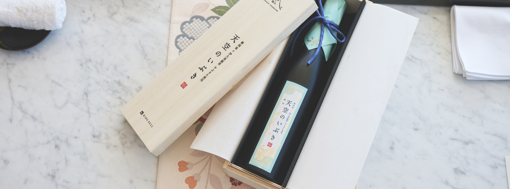
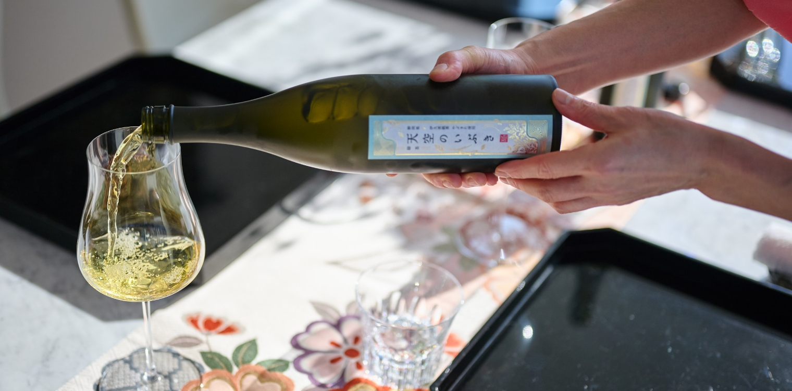
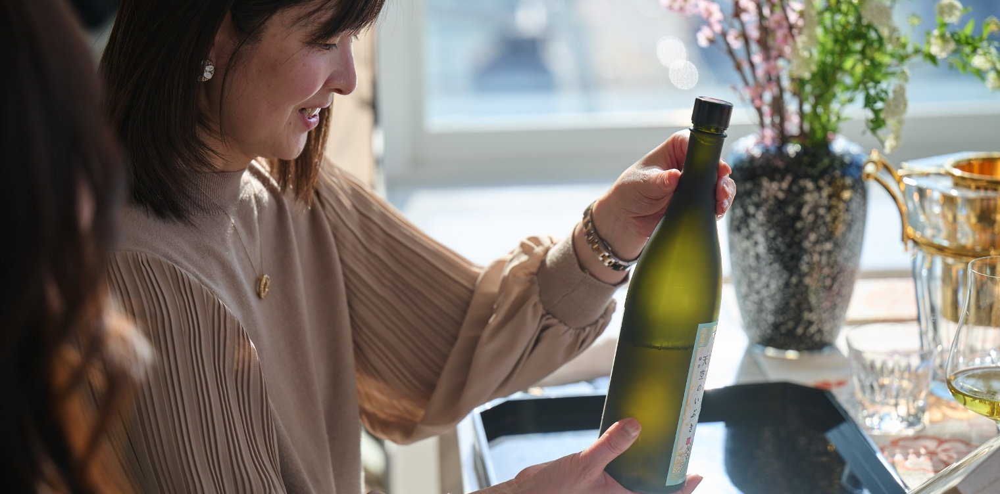

「日本の極み」を使ったホームパーティー
1
（ドリンク）天空のいぶき

パーティーのスタートは、「天空のいぶき」で乾杯から。日本有数の日本茶鑑定士が全体監修したボトリングのグリーンティーです。選び抜かれた浅蒸しの茶葉を低温で抽出し、茶葉が持つ旨み成分を活かして、豊かで濃厚な味わいと甘みを想像させる香りを実現しました。
グラスが行き渡ったところで、いよいよパーティーのスタートです！
- 内田みち代 さん
- 色が綺麗でワインみたいですね。
- 壁谷玲子 さん
- そうですね、黄金色というか……。
- 内田みち代 さん
- ここから香りがすごい！ ここで香るお茶なんて珍しいですよ。
- 松野エリカ さん
- なんというか、「ホンモノ」の味！
- 酒匂ひろ子 さん
- 凝縮された、濃厚なお味！ 初めて飲むお茶です！
- 壁谷玲子 さん
- 茶葉の「ナマ」な感じがして、フレッシュは葉っぱの味。家で入れるドライな茶葉とは違いますね…。お茶の概念を覆すというか。
ハッピーな気持ちになって、感動が残りますね。

- 酒匂ひろ子 さん
- 遮光がポイントなんでしょうか、とっても綺麗なボトル。
普通のお茶って常温なのに、冷蔵ってことは、やはりお味が変わってしまうんでしょうか。 - 内田みち代 さん
- 保存料を使ってないからですね、きっと。
- 松野エリカ さん
- これいただいたらすごく嬉しい！
- 内田みち代 さん
- 開けるのがちょっと怖いくらいですね、ワインだってちょっと怖いのに（笑）。